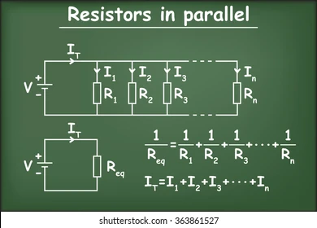

Resistor Addition (addition parallele)
Fundamentals
When connecting components, in this case resistors in paralle, the total equivalent resistance is the reciprocal of the sum of the individual reciprocalsall individual resistors.
In this configuration, the resistors carry exactly the same voltage but generate different curreent drops based on their individual resistance values.
https://www.electronics-tutorials.ws/resistor/res_4.html (information source, Wikipedia)
Uses
Resistors in paralelle are useful to divide the current into different branshes with distinct values (while keeping the voltage the same).
Formulas Rearrangements
The formula can be rearranged to find the total resistance or an individual resistance value. The rearrangements are as follows:
- RT = 1 / ( (1 / R1) + (1 / R2) + (1/ R3) + ... + (1 / Rn) )
- R1 = 1 / ( (1 / RT) - (1 / R2) - (1 / R2) - ... - (1 / Rn) )
- https://www.shutterstock.com/image-vector/association-resistors-parallel-resistor-voltage-current-363861527 (image source)

Calculator
This is a calculator that can be used to calculate the Vout, Vsource, Rx, and RTotal in a circuit. It is based on the voltage divider formula and can be used to find the unknown value when the other values are known. These are the instructions on how to use the calculator:
- To start the calculator, press "Start"
- Use numbers only, do not enter any letters or special characters (this inclused SI prefixes).
- For your unknown value, enter 0.
- Click the "Start" button to begin.
- Click on the button (Add first resitor) to add the first resistor value (It doesnt matter which one is the first resistor for most cases, just make sure to only click this button once or the calculation will be messed up).
- Click on the button (Add new resitor) to add a new resistor value.
- Then click on the "Calculate" button and the result will be calculated and displayed.
- To reset the calculator, click the "Reset" button.